일반 캐스터 구조
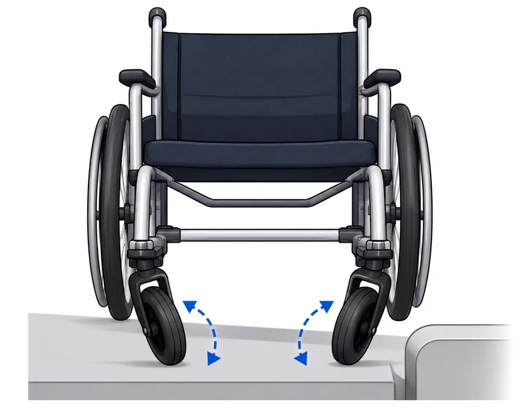
턱·틈에서 전도 위험
유럽 여행 중 목격한 장면에서 시작됐습니다.
저상버스와 배리어프리 인프라가 비교적 잘 갖춰진 도시에서도, 정류장과 차량 사이 간격과 출입구의 작은 단차 때문에 휠체어 이용자가 혼자 오르내리지 못하고 주변의 도움을 받는 장면을 여러 번 마주했습니다.
인프라가 갖춰진 이후에도,
승하차 순간의 미세한 틈은 그대로 남아 있었습니다.
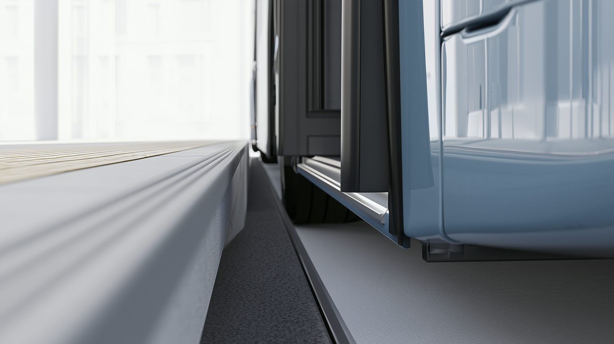
국내 지역별 저상버스 보급률 평균 44.4% — 인프라는 개선되고 있지만 지역 격차가 크고 (서울 71% vs 울산 18.7%), 지하철 승강장 틈과 보도블록 단차는 여전히 곳곳에 남아 있습니다.
67.7%
교통수단 이용에 어려움을 겪는 지체장애인 중 그 이유로 '버스·택시의 물리적 접근과 탑승 시 어려움'을 꼽은 비율 — 전체 장애유형 평균(53.2%)보다 높습니다.
출처: 한국보건사회연구원, '2023년 장애인 실태조사' (보건복지부 승인통계)
하지만 승강장과 차량 사이의 미세한 간격, 작은 단차 때문에 여전히 타인의 도움이 필수적인 상황입니다.
전국 17개 시·도 중 서울이 가장 높고 울산이 가장 낮습니다 — 최대 3.8배 차이입니다.
출처: 국토교통부, '2024년 교통약자 이동편의 실태조사' (2025)
수동 휠체어의 앞바퀴(캐스터 휠)는 평지에서 방향을 바꾸기엔 유리하지만, 좁은 장애물을 만나면 바퀴가 옆으로 틀어지며 넘어질 위험이 매우 큽니다. 캐스터 휠 구조의 이 근본적 한계는 지금도 그대로입니다.
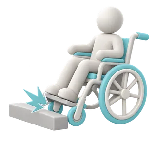
41.2%
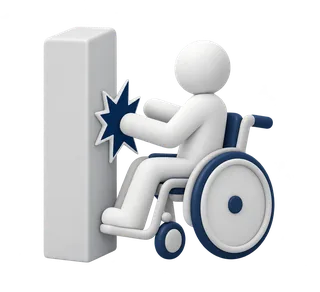
36.3%
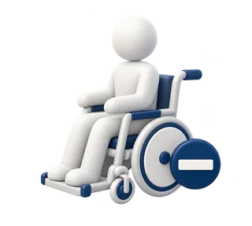
32.4%
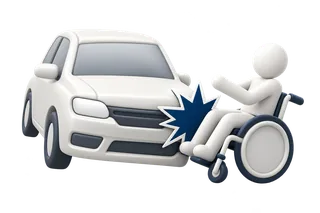
24.5%
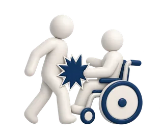
22.5%
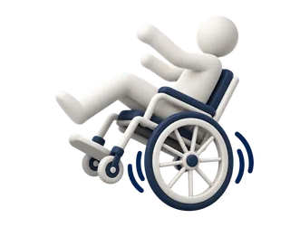
12.7%
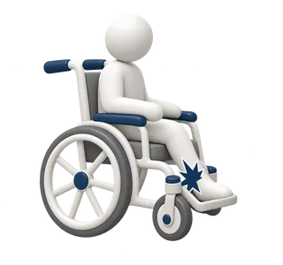
10.8%
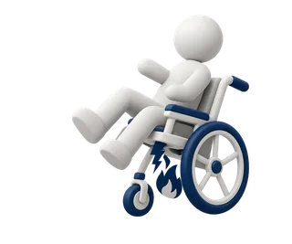
8.8%
전동보장구를 3년 이상 이용한 287명 중 35.5%(102명)가 사고를 경험했으며, 위 비율은 그 102명의 사고 유형입니다(중복응답). 출처: 한국소비자원, 전동보장구 이용 실태조사 (2016. 4.)
평상시에는 캐스터가 자유롭게 도는 상태를 그대로 유지해 좁은 실내에서의 조향성을 보존하고, 문턱·틈·승강장 간격을 지날 때만 레버 조작으로 바퀴 방향을 고정해 보조 바퀴가 지지 축 역할을 하도록 만든 탈부착형 기계식 보조 장치입니다.

턱·틈에서 전도 위험
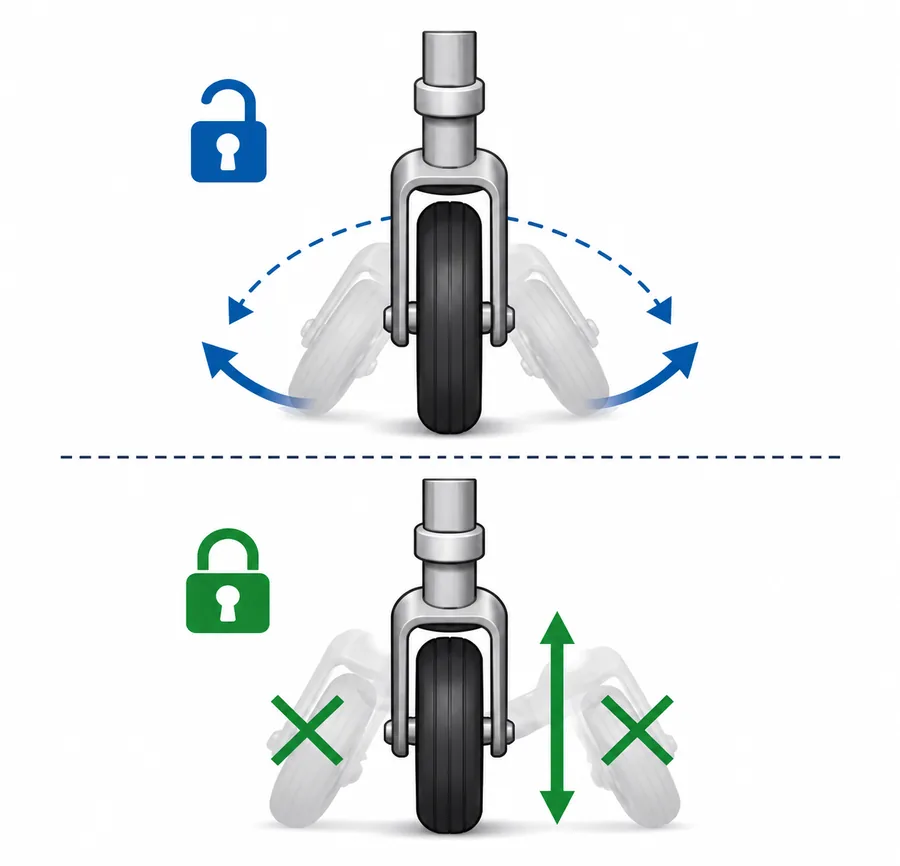
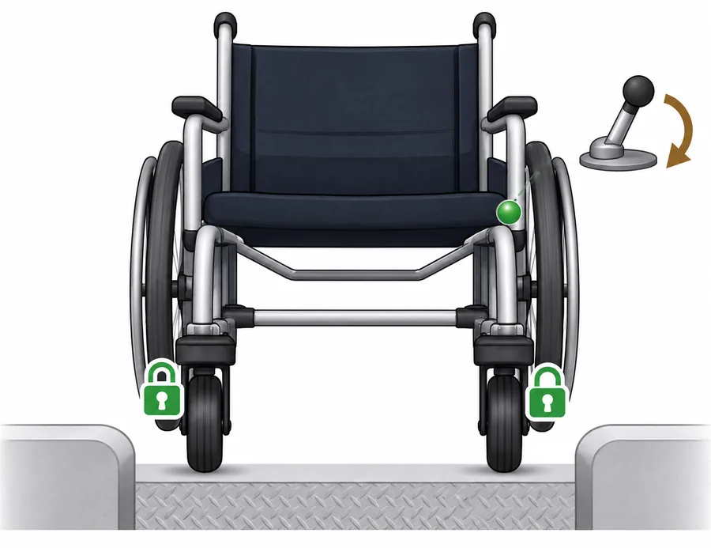
장애물 통과 시 락 기능으로 안정성 ↑
INTERACTIVE
평상시에는 캐스터가 자유롭게 회전해 좁은 실내에서도 기존과 똑같이 방향을 바꿀 수 있습니다. 다만 문턱이나 틈을 만나면 바퀴가 옆으로 틀어져 끼거나 전복될 위험이 커집니다.
버튼을 눌러 락 메커니즘의 작동을 확인해 보세요.
필요할 때만 캐스터를 중심 위치로 유도해, 실내 조향성과 장애물 통과 안정성을 함께 확보합니다.
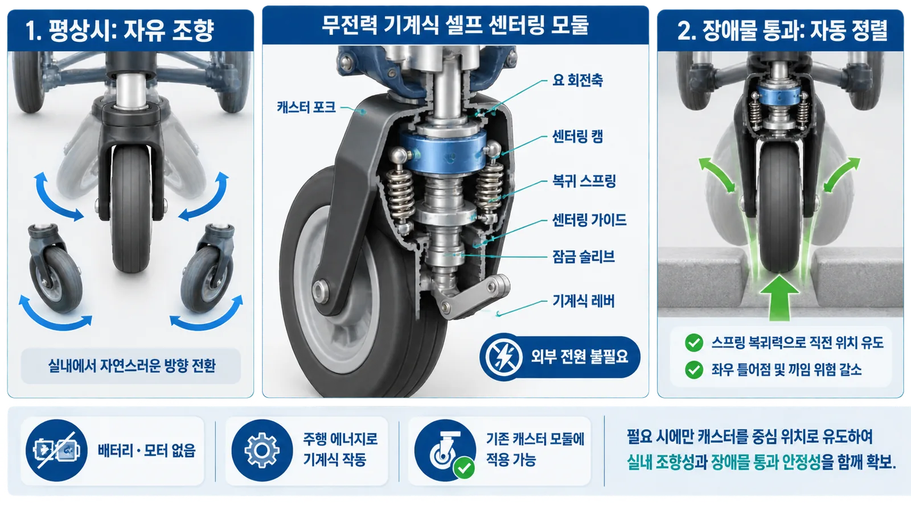
직진 정렬을 돕는 V-캠·복귀 스프링 기구 구조로, 잠글 때 바퀴가 스스로 중심을 찾아 오작동을 줄입니다.
배터리·모터 없이 주행 에너지와 레버만으로 작동해 고장 요소와 유지비를 최소화합니다. 충전 부담도 없습니다.
기존 수동 휠체어의 캐스터 모듈에 그대로 장착해, 이용자가 익숙한 휠체어를 계속 사용합니다.
해외 학술·특허(Assistive Caster Unit for Step Climbing 등) 선행조사를 통해 본 잠금 구조가 기존 특허와 중첩되지 않음을 1차 확인했습니다. 이를 바탕으로 지하철 승하차 간격, 저상버스 승하차구, 좁은 실내 문턱 등 국내 이동 환경에 최적화한 청구항을 구성해 모방이 어려운 특허를 출원할 계획입니다.
캐스터를 통째로 들어올리는 부착형 액세서리는 회전 반경이 커져 실내에서 불편하고, 전동·로봇형 휠체어는 휠체어 자체를 바꿔야 해 가격과 무게·충전 부담이 큽니다. 보조기기가 필요해도 구입하지 않는 가장 큰 이유가 '경제적 비용 부담'(44.2%)인 만큼, 중간 단계의 저비용·고효율 해법이 필요합니다.
출처: 한국보건사회연구원, '2023년 장애인 실태조사' (보건복지부 승인통계)
FreeWheel 미국
수동 휠체어 부착형 앞바퀴
약 80~120만 원대
WHILL 일본
경량 전동 휠체어
약 500~700만 원대
Scewo 스위스
계단 등반 로봇 휠체어
약 5,000만 원대
Paracle 캐스터 락 모듈
기존 휠체어에 부착
목표 약 5만 원대
※ 참고 가격대는 각사 공식 판매 페이지의 공개 가격(FreeWheel $599~899, WHILL 기본형 $4,999~, Scewo BRO 32,850 CHF~)을 2026년 9월 환율(약 1,336원/달러)로 환산한 추정치이며, 환율·구성에 따라 달라질 수 있습니다. 당사 목표 소비자가는 부품 원가·제조 방식 검토를 거쳐 확정될 예정입니다.
| 구분 | Paracle 캐스터 락 모듈 | FreeWheel 미국 | WHILL 일본 | Scewo 스위스 |
|---|---|---|---|---|
| 동력원 | 무전력 (기계식) | 무전력 (기계식) | 전동 / 배터리 | 전동 / 배터리 |
| 기존 휠체어 호환 | 그대로 부착 가능 | 그대로 부착 가능 | 휠체어 자체 교체 필요 | 휠체어 자체 교체 필요 |
| 실내 좁은 공간 회전성 | 평상시 자유 회전 유지 | 회전 반경 커짐 (제약) | 비교적 양호 | 회전 반경 큼 (162kg, 정지 시 115cm) |
고령화와 기술 융합이 만드는 보조기기·에이블테크 시장은 빠르게 확장되고 있습니다. 연평균 8.9% 성장하는 글로벌 보조기술 시장과 커지는 국내 시니어 산업이 파라클의 시장 기반입니다.
0억 달러
2025년 글로벌 보조기술 시장
0억 달러
2034년 전망 CAGR 8.9%
0조 원
2030년 국내 시니어 산업 규모(상단 전망)
0만 명
국내 교통약자 (전체 인구의 31.5%)
※ 시니어 산업 규모는 기관별 전망이 갈립니다 — 경희대 에이지테크연구소는 2030년 126조~271조 원 (271조 원은 상단 전망치), 경희대 고령친화융합연구센터는 168조 원으로 추정합니다.
2025년 304억 달러에서 2034년 652억 달러로, 9년간 규모가 두 배 이상 커집니다.
※ 2025년·2034년 값은 시장조사기관 Custom Market Insights 발표치이며, 중간 구간은 두 값에 내포된 연평균 성장률(8.9%)로 보간한 추정 곡선입니다. 다른 시장조사기관은 2025년 239~365억 달러, 2034년 483~882억 달러, CAGR 8.1~10.3%로 더 넓게 추정하는 등 기관별 편차가 있습니다.
교통약자 전반
1,613만 명
일시적 이동 제약 인구 포함 · 전체 인구의 31.5%
65세 이상 등록장애인
약 145.6만 명
고령 보행 보조기기 사용자 · 등록장애인의 55.3%
국내 등록 지체장애인
약 113만 명
등록장애인의 43.0% · 이 중 60세 이상 73.4%
출처: 보건복지부 등록장애인 현황(2024), 한국보건사회연구원 '2023년 장애인 실태조사', 국토교통부(2024)
복지 용구 쇼핑몰 판매 및 급여 품목 등재를 통한 본인부담금 경감 판매, 보조기기 판매점 직접 판매
휠체어 제조·유통사 OEM·번들 공급 및 재활병원·복지관 장비 납품
지자체·복지시설 공공 조달 및 조달청 우수제품 등록을 통한 안정적 공급 채널 확보
복지관·재활병원과의 PoC로 실사용 후기와 정량 데이터를 확보하고, 체험 영상·블로그 콘텐츠 마케팅에 활용합니다.
장애인 자립생활센터, 보조기기 판매점, 온라인 복지 용구 쇼핑몰에 입점해 접점을 넓힙니다.
장애인 인플루언서·유튜버 체험단을 운영하고, 지체장애인 커뮤니티·협회와 협업 캠페인을 진행합니다.
복지관·자립생활센터 대상 무상 체험 파일럿으로 얼리어답터를 확보하고 실사용 피드백을 함께 수집합니다.
PoC 참여 기관을 레퍼런스로 삼아 지자체 복지 예산·바우처 대상 품목 등재를 추진합니다.
ESG 차원의 중견·대기업 협력과 이동 약자 관련 스타트업과의 콜라보레이션 캠페인으로 제품을 알립니다.
장애인 이동권 보장이라는 사회적 가치를 지표·포인트 제도로 설계해 임팩트 투자·공공 조달·기부 채널 전략과 통합합니다.
FGI·설문으로 문제를 정량화하고, 시제품과 테스트베드로 검증하고, 특허와 현장 실증으로 신뢰를 확보한 뒤 양산과 인증으로 나아갑니다.
이용자·재활 전문가 FGI·설문으로 장애물 유형별 불편도를 정량화하고, 구조 설계와 3D 시뮬레이션으로 목표 스펙을 확정합니다.
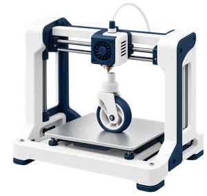
3D 프린팅 시제품을 만들어 문턱·보도블록·지하철 틈을 재현한 테스트베드에서 반복 개폐 내구 시험을 진행합니다.
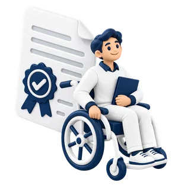
락 메커니즘 핵심 특허를 출원하고, 복지관·협력 병원 현장 실증으로 성능과 안전성 데이터를 확보합니다.
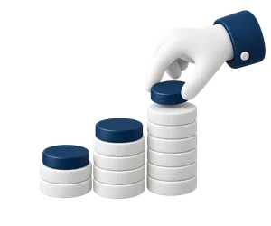
사업화 자금을 확보해 양산 설계를 마치고, 초도 양산과 안전 인증을 진행합니다.
Short-term Roadmap
복지관·재활병원 현장 실증으로 성능과 안전성에 대한 정량 데이터를 확보합니다.
국내 이동 환경에 최적화한 락 메커니즘 청구항으로 모방이 어려운 진입장벽을 만듭니다.
장애인보조기구 복지 용구 급여 품목 등재와 조달청 우수제품 등록으로 안정적 판로를 엽니다.
양산 설계와 안전 인증을 마치고, 투자 유치로 생산 규모와 판매 채널을 확장합니다.
Long-term Roadmap
2026
2027 ~ 2028
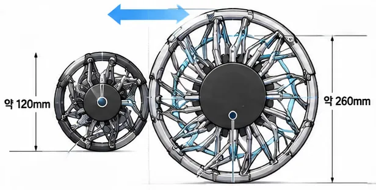
2029 ~ 2030
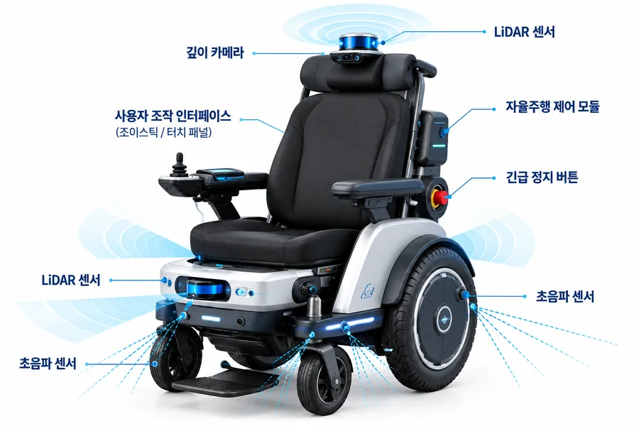
파라클 모빌리티(Paracle Mobility)는 이동 약자가 매일 마주하는 승하차, 문턱, 틈 — 반복되는 일상의 장벽을 해결해 독립적인 삶과 안전을 보장하는 애프터마켓 모빌리티 솔루션 기업입니다.
수동 휠체어에 부착하는 기계식 캐스터 락 모듈로 시작해, 가변 보조바퀴와 자율주행 휠체어로 확장합니다. 궁극적으로 이동 약자가 대중교통과 일상 공간을 안전하고 자유롭게 이용할 수 있도록 보장하는 휠체어 안전장치 대표 브랜드로 자리매김하는 것이 목표입니다.
넘어지지 않는다는 확신이 이동의 시작입니다.
도움을 기다리지 않고 스스로 건널 수 있어야 합니다.
누구나 감당할 수 있는 가격이어야 진짜 해법입니다.
복지관·재활병원 현장 실증(PoC), 보조기기 유통 협력, ESG·임팩트 투자에 관심 있는 분들의 연락을 기다립니다.